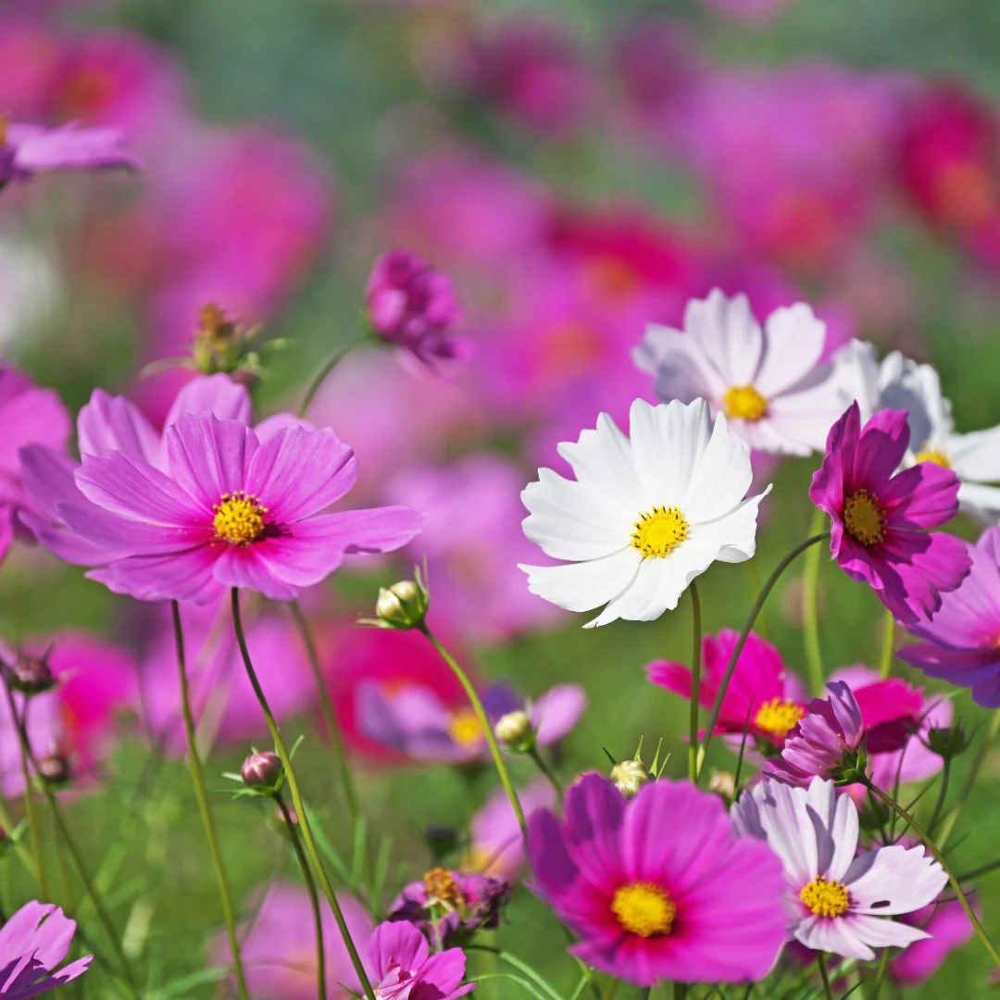

Flowers are the colorful and fragrant reproductive parts of flowering plants. First appearing millions of years ago, they transformed ecosystems by attracting bees, butterflies, and birds to aid in pollination and seed creation.They come in countless shapes, sizes, and vibrant colors—from tiny daisies to large, tropical blooms. Beyond nature, humans cherish flowers for home and temple decorations, weddings, perfumes, and religious rituals.